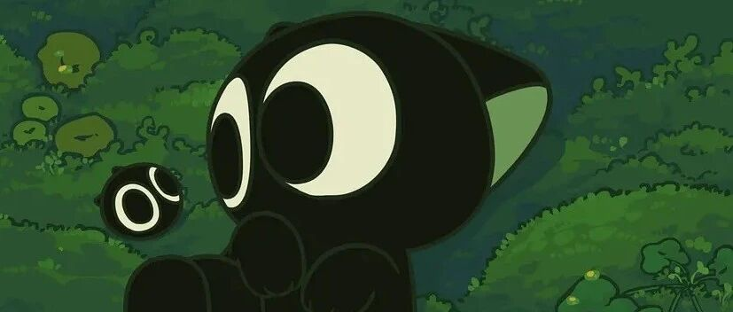

又悟了！这还真是个好方法！
原创
秋秋
秋秋
秋秋很开心
2021年10月19日 15:02
在小说阅读器读本章
去阅读
在小说阅读器中沉浸阅读
点击关注
秋秋很开心
近3年目标：写作、存钱、房车旅行。
图：
@秋秋
文：
@秋秋
大家好，我是秋秋呀～
最近大老王问了我一个问题：为啥你做事的时候，一点不想其他的？
果然，目标指导行动。
如果你有清晰的目标，大概做事就会很专注，很少会问自己：我做这件事到底为啥？
今天这篇文章，希望能用一个简单有效的方法，帮你建立目标感。
适用于：做事没动力的人
好处：目标指导行动，快速的让你做事你会更专注，每天都有动力
开始之前，先说下这个方法的科学依据。
方法很简单，就是问自己问题。
在心理学上，我们学过一种方法叫认知疗法。
主要特点是，心理咨询师不是单纯的帮助来访者解决问题，而是通过
提 问
，让来访者自己反思，发现自己的思维不合理的地方。
认知疗法对治疗心理障碍、焦虑、人际关系都有很好的效果。
我希望接下来，大家也能认真思考回答下面4类问题，来简单有效建立目标感。
1、职业目标
分为状态、期待、收入、支撑4个方面。
你可以保存下来这篇文章，在一个安静的时刻认真思考以下问题：
（1）你理想的工作是什么？理想中上班的一天应该怎么度过？
（2）你希望那家公司是什么样？同事、领导、公司氛围如何？
你绝对不能接受的工作底线是什么？
（3）你希望3年后，能在工作上取得什么样的成绩？是否想要成为一家公司的中高层，带领自己的团队？
（4）你希望工作3～5年后，收入达到怎样的水平呢？
（5）为了实现上面的工作目标？你现在应该学习什么？或做哪些努力呢？
上面的问题你可以抽时间写到纸上，工作的时候自然不会浑浑噩噩。
2、学习目标
在业余时间里，你可以思考想要提升的地方。
如果暂时没爱好，可以考虑从这几方面入手：
（1）你的专业/工作上，有没有需要继续提升的技能？
学哪些技能，会对你的专业工作有好处？
（2
）你小时候是否有一些兴趣爱好，但因为时间 or 金钱原因没坚持下去，现在是否可以重拾这些技能？
（3）你生活里是否有一些困扰？比如同事关系、爱情关系、家庭关系、亲子关系。
是不是要学习一下这方面的知识，以便更好的处理上面的问题？
（4）如果想做副业，你觉得哪些技能可以有效的提升你的生活质量？
（5）想象未来5年，根据行业发展，你觉得需要精通什么技能？
把这些回答写出来，然后认真的去知乎、豆瓣找学习方法，该报班报班，该买书买书。
3、生活目标
这一块要包括的东西比较多，比如自身形象、作息时间、家居装饰、旅行度假、家庭生活。
我觉得生活目标是非常必要的，这里的每一个小变化，都会让你的心情特别好。
（1） 个人形象：试想3年后，你希望自己是什么样的？
你的皮肤、穿搭、体重、发型是否有需要调整的地方？
可以从现在就去有机会的探索自己的风格。
那么3年之后，你会迎来一个崭新的自己。
（2） 关于作息：你希望几点能起床、几点休息？
饮食上你有什么安排？每周需要运动几次？
这里的目标越具体越好。
（3）关于生活：思考下你理想的居住环境，你想要一个什么样的家呢？
房子是租来的，但生活不是。
可以去网上找自己喜欢的家居照片，把家变成自己喜欢的样子。
热爱生活的人，才会每天都有动力。
（4）接下来有没有想去的地方？国内外大好河山，有没有很想亲自去看一看的呢？
（5）与家人相处还满意吗？如果不满意，把自己满意的状态写出来，给自己调整下方向。
4、金钱目标
最后一块，你可以去设置一个具体的数字。
当然也可以去思考下面的问题：
（1）目前有没有贷款或欠债呢？考不考虑还完呢？什么时候还完呢？
（2）
手里是否有备用金？是否有半年以上的生活费以被不时之需？
（3）考不考虑给自己和家人、做一个保险规划？如果考虑的话，预算是多少？
（4）每年有想去旅行的地方或购买的电子产品、奢侈品吗，大概需要准备多少钱？
（5）未来10年，是否需要攒钱买车子、房子？
房子的话会考虑这买在哪个城市？面积多大？是全款付还是贷款呢？大概需要多少钱？
自己未来10年有没有特别规划，比如我想去房车旅行，那需要存多少钱去实现目标？
也可以提前规划下自己的养老生活。
一般你存款的1/25，够你一年生活费，那这笔钱差不多就够养老。
一个月生活费5000，一年6万，考虑通货膨胀，那么至少要存150万养老金
（一下子有动力了）。
也许很难，但能够月入过万的话，也许10年内可以实现。
以上所有问题，旨在回答之后，
让你对目标有更清晰的认识。
我们在进行心理疗法的时候，也会通过提问让来访者自己发现的真实想法。
如果你能够认真思考并写下来，
相信我，接下来每天你都会很有动力～
另外，我觉得乐观也是一个优势。我知道很多人不敢定目标是害怕实现不了，但你要想：
所有的目标都是服务你自己的。
如果把它当成一个事业自己暗暗去做，那完成的时候，多有成就感啊。
点这，不可错过的高质量App
阅读原文